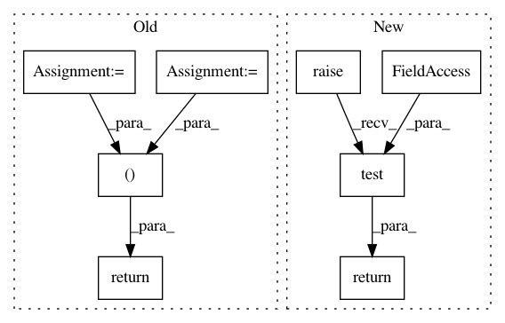

bea3a486261d3f6238316224605b684db1e5bca7,Tars/models/ml.py,ML,test,#ML#Any#,34
Before Change
with torch.no_grad():
log_like = self.p.log_likelihood(test_x)
loss = -torch.mean(log_like)
return log_like, loss
After Change
self.p.eval()
self.other_distributions.eval()
return super().test(test_x, **kwargs)
In pattern: SUPERPATTERN
Frequency: 3
Non-data size: 8
Instances
Project Name: masa-su/pixyz
Commit Name: bea3a486261d3f6238316224605b684db1e5bca7
Time: 2018-10-16
Author: masa@weblab.t.u-tokyo.ac.jp
File Name: Tars/models/ml.py
Class Name: ML
Method Name: test
Project Name: masa-su/pixyz
Commit Name: bea3a486261d3f6238316224605b684db1e5bca7
Time: 2018-10-16
Author: masa@weblab.t.u-tokyo.ac.jp
File Name: Tars/models/vae.py
Class Name: VAE
Method Name: test
Project Name: masa-su/pixyz
Commit Name: bea3a486261d3f6238316224605b684db1e5bca7
Time: 2018-10-16
Author: masa@weblab.t.u-tokyo.ac.jp
File Name: Tars/models/vi.py
Class Name: VI
Method Name: test